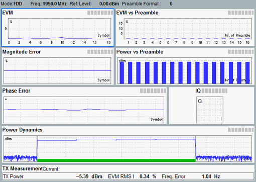

The results of the NB-IoT NPRACH measurement are displayed in several different views.
For a detailed description, see "Measurement Results".
The NPRACH measurement provides an overview dialog and a detailed view for each diagram in the overview. The overview dialog shows modulation, I/Q constellation and power dynamics results as diagrams. A selection of statistical results is also shown.

Most of the detailed views show a diagram and a statistical overview of single-slot results.

The results can be retrieved via the following remote commands.
Remote command:The results can be retrieved via the following remote commands.
Remote command: